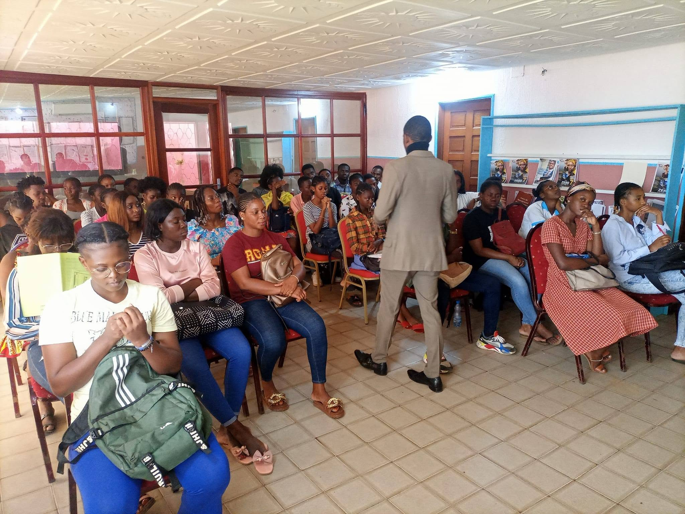

Choisir son école
Explorez les domaines, les formations proposées et l’approche de chaque établissement.


Images, récits et vidéos : découvrez la vie du SCIPT INTERNATIONAL.
Nous souhaitons accompagner chaque apprenant dans la construction d’un projet de formation solide, en associant connaissances, pratique et ouverture sur le monde professionnel.
Texte de présentation provisoire — à valider avec la direction.
Études universitaires ou acquisition de compétences professionnelles : commencez par l’école, puis découvrez les niveaux et les formations qui s’y rattachent.
Explorez les domaines, les formations proposées et l’approche de chaque établissement.
Comparez les niveaux et demandez à l’équipe de confirmer les prérequis de la formation choisie.
Rassemblez les pièces demandées et obtenez le coût et l’échéancier officiel avant l’inscription.
Choisissez la voie qui correspond à votre projet et ouvrez la porte de votre avenir.
Du premier diplôme aux études doctorales, explorez nos domaines de formation.
Des parcours pratiques organisés autour des qualifications CFP, AFP, CAP et CQF.
À l’École Doctorale Internationale SCIPT, le projet de recherche prend forme autour d’une problématique, d’une méthode et d’un accompagnement académique. Découvrez les domaines doctoraux et les étapes de candidature.
Découvrir l’école

Une école ouverte sur les savoirs, les métiers et l’international.

Des parcours en droit, administration, gestion et finance.

Apprendre, construire et innover dans les domaines scientifiques et techniques.

Des parcours de santé et d’accompagnement au service des personnes.
Un accompagnement pour construire votre projet de formation et envisager de nouvelles perspectives à l’international. Découvrez nos domaines et échangez avec notre équipe sur les parcours et les partenariats disponibles.
En savoir plus →Une mosaïque de destinations pour imaginer la suite de votre parcours.
Découvrez les perspectives d’études à l’international et renseignez-vous auprès de notre équipe sur les démarches possibles.
Explorez des expériences universitaires au-delà des frontières, selon les partenariats et les parcours disponibles.
Préparez votre projet de formation avec les conseils de notre équipe et les informations adaptées à votre situation.
Construisez votre projet et découvrez les opportunités de mobilité à confirmer avec nos conseillers.
Présentez-nous votre projet de formation. Notre équipe vous répondra directement.
Nous contacter →Une question sur un programme ou une admission ? Envoyez-nous votre demande.
Adresse
Ancienne Sobraga, derrière l’hôtel Excellence, villa 229,
Libreville, Gabon
Téléphone
(+241) 074 25 43 43 · 076 42 16 42